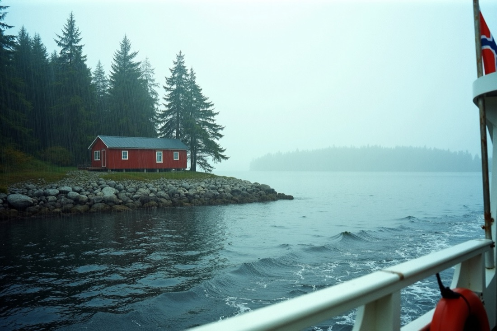
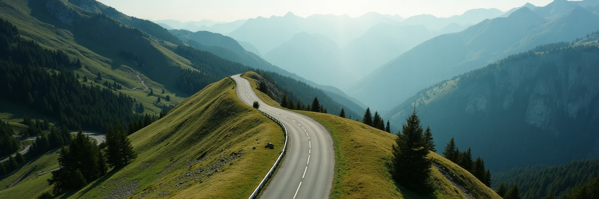
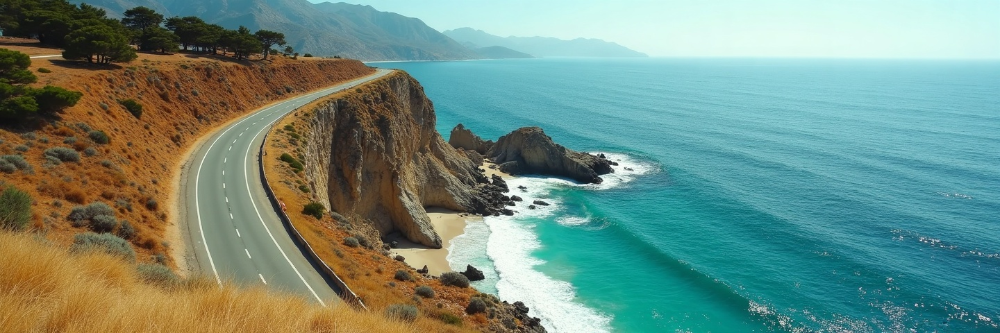

Die Web-Oberfläche kann inzwischen deutlich mehr als die App: öffentliche Profile, vollständige
Kontoeinstellungen, eine Galerie aller öffentlichen Touren. Diese Seite zeigt, wie das auf dem
Telefon aussieht, was nativ gebaut wird und was die App aus dem Web einbettet.
Die Leiste hat heute zwei Reiter, dazwischen den Aufnahme-Knopf. Er ist kein dritter Reiter, sondern startet etwas. Mit „Entdecken" verliert er seine Mitte.
Kontoeinstellungen werden kein Reiter. Im Web stehen Profil und Kontoeinstellungen
zusammen in einem Menü. In der App wird das Profil ein Reiter, die Einstellungen erreicht man
über ein Zahnrad darin. Ein Dauerplatz in der Leiste wäre an einen Bereich vergeben, den man
zweimal im Jahr öffnet.
Heute
09:41
Touren
3
Koh Pha-ngan
41,1 km · 8. Nov. 2025
Berner Oberland
16,3 km · 4. Okt. 2025

Stockholmer Schären
24,2 km · 24. Aug. 2025
Touren
Profil
Zwei Reiter, Knopf in der Mitte
Die Mitte ist eine Aussage: links das Eigene, rechts die Person, dazwischen die Handlung. Ein
dritter Reiter nimmt ihr diese Stelle.
Variante A · gewählt
09:41
Touren
3
Koh Pha-ngan
41,1 km · 8. Nov. 2025
Berner Oberland
16,3 km · 4. Okt. 2025
Stockholmer Schären
24,2 km · 24. Aug. 2025
Touren
Entdecken
Profil
Drei Reiter, Knopf als FAB
Der Knopf verlässt die Leiste und wird, was er ist: eine Handlung über dem Inhalt. Er liegt nur
im Touren-Reiter.
A · verfeinert
09:41
Touren
3
Koh Pha-ngan
41,1 km · 8. Nov. 2025
Berner Oberland
16,3 km · 4. Okt. 2025
Stockholmer Schären
24,2 km · 24. Aug. 2025
Aufnehmen
Touren
Entdecken
Profil
Drei Nachbesserungen
Der Knopf trägt das Wort „Aufnehmen" und schrumpft beim Scrollen auf das Icon. Das Icon ist kein
Plus mehr, sondern eine Strecke mit Start und Ziel; „+" heißt hinzufügen, und das gibt es seit
Akt 5 auch für Touren von der Uhr. Der aktive Reiter trägt eine Pille, die auch bei
Sonnenlicht erkennbar bleibt.
Der eigentliche Gewinn liegt nicht im Knopf, sondern im zweiten Teil seines Auftrags.
Heute führt er während einer laufenden Aufnahme zu ihr zurück. Das kann er nur, solange man ihn
sieht. Ein FAB im Touren-Reiter sieht man aus „Entdecken" heraus nicht. Der bessere Griff dafür
ist ohnehin ein anderer: Akt 2.
Akt 2
Die laufende Aufnahme
Solange aufgezeichnet wird, liegt ein Streifen über der Leiste, in jedem Reiter. Er zeigt
Dauer und Kilometer und führt zurück in die Aufzeichnung.
V1 · angedockt
14:38
Entdecken
NeuBeliebtIn der Nähe
Alfama bei Sonnenuntergang
7,4 km · Lissabon
@marta
Schären im Nebel
24,2 km · Stockholm
@henrik
Aufzeichnung · Rad0:47:12 · 3,3 km
Touren
Entdecken
Profil
Ein Block statt zwei Kästen
Der Streifen sitzt auf der Leiste, ohne eigenen Rahmen. Der Lichtstrich oben ist das
Lebenszeichen, die Linie rechts die eigene Spur. Er verdeckt nichts, sondern schiebt die Liste
hoch.
V2 · schwebende Karte
14:38
Entdecken
NeuBeliebtIn der Nähe
Alfama bei Sonnenuntergang
7,4 km · Lissabon
@marta
Schären im Nebel
24,2 km · Stockholm
@henrik
Aufzeichnung läuft0:47:12 · 3,3 km
Touren
Entdecken
Profil
Mit Griff zum Pausieren
Der pulsende Ring zeigt das Fortbewegungsmittel. Der Preis ist ein zweiter Kasten über der
Leiste und ein zweites Ziel im selben Griff: Pause und „dorthin" liegen nebeneinander.
V3 · flaches Band
14:38
Entdecken
NeuBeliebtIn der Nähe
Alfama bei Sonnenuntergang
7,4 km · Lissabon
@marta
Schären im Nebel
24,2 km · Stockholm
@henrik
Aufzeichnung · 0:47:12 · 3,3 km
Touren
Entdecken
Profil
So leise wie möglich
Eine Zeile Glas mit wanderndem Lichtstrich. Braucht am wenigsten Platz und wird am ehesten
übersehen. Als Rückfall für kleine Bildschirme brauchbar.
V1 · pausiert
Pausiert · seit 2 Min0:47:12 · 3,3 km
Touren
Entdecken
Profil
Der Zustand steckt in der Farbe
Bernstein statt rot, der Punkt hört auf zu pulsen. Dazu das Wort und wie lange schon, sonst
bleibt offen, ob man gerade selbst pausiert hat.
Warum nicht die Benachrichtigung?
Die gibt es weiterhin, sie bleibt der Weg von außerhalb der App. Innerhalb zieht niemand die
Systemleiste herunter, um zur eigenen Fahrt zurückzukommen.
Er ersetzt keinen Zustand. Dauer und Kilometer stehen auch im Aufzeichnungs-Screen.
Die Spur ist echt, dieselben Punkte wie auf der Karte. Eine erfundene Wellenlinie
fiele beim ersten Vergleich auf.
Ein Griff, ein Ziel. Ein Pause-Knopf spart einen Tipp und kostet den klaren Satz
„tippen führt zur Aufzeichnung".
Was beim Erscheinen passiert
Er schiebt sich von unten heraus und drückt die Liste hoch, statt sie zu überdecken. Kein Ein-
und Ausblenden: Ein Element, das an derselben Stelle erscheint und verschwindet, wirkt wie ein
Fehler.
Akt 3
Profil und Kontoeinstellungen
Der Reiter zeigt die eigene Seite so, wie andere sie sehen: Titelbild, Handle, Kennzahlen aus
öffentlichen Touren, Kachelgitter. Oben rechts führt das Zahnrad in die Kontoeinstellungen.
Reiter „Profil" · eigenes
09:41

H
Henrik
@henrik
7
Reisen
312
Kilometer
4
Länder
Koh Pha-ngan
Berner Oberland
Schären
Alfama
Inselrunde
Lauterbrunnen
Touren
Entdecken
Profil
Nativ, weil es eine Kachelliste ist
Dieselben Kacheln wie in Entdecken, derselbe Bild-Cache. Sonst nichts: Was das Gerät angeht,
steht in den Kontoeinstellungen.
Zahnrad → Kontoeinstellungen
09:41
Kontoeinstellungen
ab hier WebView
Speicher
3,4 GB von 10 GB
Fotos 2,1 GBVideos 1,1 GBKlänge 0,2 GB
Zugang
E-Mail-Adressehenrik@maptale.io
Passwort ändern
Angemeldete Geräte3 · dieses Gerät dabei
Sichtbarkeit
Profil öffentlichÜber den Link erreichbar
In Suchmaschinen erscheinen
Dieses Gerät
Auf diesem GerätFotos, Dienste, Benachrichtigungen
Die Naht liegt unter der Kopfzeile
Titel und Zurück-Pfeil sind nativ, alles darunter ist /konto?app=1.
Die gestrichelte Linie steht nur im Entwurf. Am Gerät ist dort nichts zu sehen, weil beide
Seiten aus DESIGN.md stammen.
Der erste Moment
09:41
Kontoeinstellungen
Ein Skelett statt eines weißen Blitzes
Ein WebView zeigt beim Start Weiß. Der View wird deshalb erst bei
onPageCommitVisible eingeblendet, bis dahin steht das
Skelett in App-Optik.
→ Auf diesem Gerät · nativ
09:41
Auf diesem Gerät
Diese Angaben gelten nur für dieses Telefon. Auf einem zweiten Gerät am selben Konto
stehen sie eigenständig.
Fotos
Automatisch ergänzenNur Bilder aus dem Zeitraum einer Tour
Verbundene Dienste
PolarVerbunden · zuletzt heute 08:12
GarminNicht verbunden
Benachrichtigungen
Neue Touren meldenWenn eine Uhr-Aufzeichnung ankommt
Abmeldenhenrik@maptale.io
Maptale 0.59.4
Der Ort für alles, was dem Telefon gehört
Erreichbar über eine Zeile in den Kontoeinstellungen, die die App ruft
(maptale://geraet). Das ist die einzige Stelle, an der
die Web-Seite die App anstößt.
Warum die Schalter nicht im WebView stehen
Sie gehören dem Gerät: Die Galerie liegt auf diesem Telefon, und bei zwei Geräten am selben
Konto soll nur eines hochladen.
Tracker brauchen den Custom Tab, mehrere Anbieter sperren eingebettete Browser für
OAuth.
Abmelden beendet im WebView nur die Cookie-Sitzung. Das Token der App lebte weiter.
Kein nativer Block im WebView: zwei Scroll-Behälter übereinander streiten sich um
jeden Wisch.
Warum die App das Web-Menü nicht nachbaut
Im Web stehen beide Einträge gleichberechtigt im Konto-Menü, weil es dort keinen Dauerplatz
fürs Profil gibt. Auf dem Telefon ist das Profil ein Reiter.
Ein Bottom-Sheet hätte eine tote Zeile: „Mein Profil", während man daraufsteht.
Die Hierarchie bleibt dieselbe: Profil ist der Ort, Konto der Schrank daneben.
Gleich sein sollten die Wörter: „Kontoeinstellungen", nicht „Einstellungen".
Akt 4
Entdecken und fremde Profile
Der Reiter zeigt alle Touren, die auf public stehen, dieselben Daten wie /galerie im Web.
Unter jeder Kachel steht, wer sie aufgenommen hat; ein Tipp öffnet das fremde Profil.
Entdecken
09:41
Entdecken
NeuBeliebtIn der Nähe
Alfama bei Sonnenuntergang
7,4 km · Lissabon · 12 Fotos
@martavor 2 Tagen
Schären im Nebel
24,2 km · Stockholm · 9 Fotos
@henrikvor 5 Tagen
Inselrunde im Regen
41,1 km · Koh Pha-ngan · 12 Fotos
Touren
Entdecken
Profil
Eine Spalte, keine Kachelwand
Die Kachel muss den Ort zeigen können, zwei nebeneinander wären Briefmarken. Kein FAB in
diesem Reiter. Unter der Kachel nur Person und Alter, denn Ort und Kilometer stehen im Bild.
Fremdes Profil
09:41

M
Marta
@marta
12
Reisen
486
Kilometer
6
Länder
Alfama
Inselrunde
Schären
Lauterbrunnen
Touren
Entdecken
Profil
Derselbe Screen, zwei Rollen
Ein „gehört mir?" entscheidet über Zahnrad und Bearbeiten-Griffe, wie im Web. Die Leiste
bleibt auf Entdecken stehen.
Jeder Chip ist eine Zusage des Servers
Gezeichnet sind drei, tragen kann heute einer.
„Neu" ist gratis, nach Veröffentlichungsdatum.
„Beliebt" braucht eine Zählung. Aufrufe zu zählen heißt, sie zu speichern, mit
eigener Frist.
„In der Nähe" braucht den Standort des Lesers. Wer den Dialog fürs Stöbern ablehnt,
lehnt ihn beim Aufzeichnen wieder ab.
Zum Start also „Neu" und Suche.
Was hier offen ist
Ohne Titelbild zeigt das Banner eines der vier mitgelieferten, deterministisch aus
dem Handle gewählt.
Kennzahlen summiert der Server, nur über öffentliche Touren.
Folgen gibt es nicht und ist deshalb nicht gezeichnet. Es wäre eine eigene
Entscheidung mit Server-Anteil.
Der Weg zurück aus dem Player
Im App-Modus führt .app-exit heute fest in die eigene
Tourliste. Mit „Entdecken" stimmt das nicht mehr: Wer aus einer fremden Tour kommt, will
dorthin zurück.
Akt 5
Welche Touren von der Uhr kommen
Nicht jede Aufzeichnung ist eine Reise. Wer eine Uhr trägt, sammelt Hallentrainings und Fahrten
zum Bäcker, und heute landet alles in der Bibliothek. Deshalb ein Schalter pro Anbieter
und eine Liste zum Selbstwählen. Beides gehört zum Konto, nicht zum Gerät: Token und
Webhook liegen beim Server.
Kontoeinstellungen · WebView
09:41
Kontoeinstellungen
Verbundene Dienste
PolarVerbunden · zuletzt heute 08:12
Touren automatisch übernehmenNeue Aufzeichnungen kommen von selbst
Aus Polar hinzufügen …Ältere Aufzeichnungen nachholen
GarminNicht verbundenVerbinden
Der Knopf „Verbinden" ruft die App. Die Anmeldung beim Anbieter läuft im
System-Browser, nicht hier drin.
Ein Schalter je Anbieter
Wer Polar für Reisen und Garmin fürs Training trägt, will diese Trennung. Standard bleibt
an. Beide markierten Zeilen rufen die App.
Auswahl · nativ
09:41
Aus Polar hinzufügen
Aufzeichnungen der letzten 90 Tage mit GPS.
Was du nicht auswählst, wird nicht gespeichert.
Radfahrt · LissabonGestern 17:40 · 24,1 km · 1:52 h
Wanderung · Lauterbrunnen4. Aug. · 11,3 km · 3:20 h
Laufen · Frankfurt2. Aug. · 8,4 km · 0:47 h
Radfahrt · Frankfurt31. Juli · 6,2 km · 0:24 h
Wanderung · Taunus28. Juli · 14,7 km · 4:05 h
2 Touren hinzufügen
Nativ, weil hier ausgewählt wird
Mehrfachauswahl mit Vorschaubildern. Die Liste wird live geholt und nicht gespeichert,
sonst lägen bei uns Daten über Aufzeichnungen, die bewusst nicht importiert wurden.
Was daran entschieden werden muss
Die Liste hängt nicht am Schalter, denn der häufigste Anlass ist ein anderer: Uhr
heute verbunden, Tour von letztem Sommer nachholen.
Kein Push bei ausgeschalteter Automatik. Der Weg ist dann die Liste.
Nur Aufzeichnungen mit GPS. Eine Halleneinheit ist keine Tour.
Vorschaubilder nur, wo es welche gibt. Vor dem Import existiert kein Titelbild.
Akt 6
Der erste Start
Bisher steht am Anfang eine Anmeldemaske, und ein Konto gibt es nur im Web. Wer die App lädt,
steht vor einer verschlossenen Tür. Auf maptale.io verlangt die Registrierung zusätzlich
einen Einladungscode.
Deshalb ist der wichtigste Knopf des Onboardings nicht „Konto anlegen", sondern „Erst umsehen".
„Entdecken" ist öffentlich und braucht kein Konto. Man kann fremde Reisen ansehen, bevor man
eine Adresse hergibt. Das entschärft die Einladungshürde und dreht die Reihenfolge um: erst
zeigen, was die App macht, dann fragen.
1 · Was dabei herauskommt
09:41
3
Überspringen
Deine Reise, als Flug über die Karte.
Aus Strecke und Fotos wird eine Kamerafahrt über echtes Gelände, mit Wetter,
Tageslicht und einem Halt an jedem Bild.
Weiter
Das Ergebnis zuerst
Die erste Bühne beantwortet die Frage aus dem Store: Was kommt dabei heraus? Route und
Foto-Pins liegen über dem Bild. „Überspringen" steht von Anfang an oben rechts.
2 · Wie sie entsteht
09:41
Aufzeichnung 0:47:12
Überspringen
Aufnehmen und einfach fahren.
Starte die Aufzeichnung und steck das Telefon weg. Deine Fotos von unterwegs findet
die App selbst und setzt sie an die Stelle, an der sie entstanden sind.
Weiter
Der Satz, der die Arbeit wegnimmt
„Steck das Telefon weg" ist das Versprechen. Die Szene zeigt beides: die Strecke, die
weiterläuft, und zwei Fotos, die an ihr andocken. Dass Bilder automatisch verortet werden,
erwartet niemand.
3 · Ohne Telefon in der Hand
09:41
Deine UhrMaptaleFotos vom Telefon
Überspringen
Du trägst schon eine Uhr?
Dann zeichne nichts doppelt auf: Polar und Garmin schicken ihre Touren direkt an
Maptale. Das Telefon steuert die Fotos bei.
PolarGarminbald mehr
Los geht's
Der Vorgriff auf die Tracker
Wer eine Uhr trägt, entscheidet hier, ob die App taugt. Die Kette zeigt den Weg: Uhr,
Maptale, Fotos vom Telefon. „bald mehr" ist ehrlicher als eine Liste, die Strava vermuten
lässt. Verbunden wird erst in Schritt 5.
4 · Studio, eher nicht hier
09:41
maptale.io/app
Überspringen
Feinschliff am großen Bildschirm.
Am Rechner öffnest du dieselbe Tour im Studio: Kamerafahrt, Musik, Titel, Halte
kürzen. Die App bleibt für unterwegs.
Los geht's
Richtig, aber zum falschen Zeitpunkt
Vor der ersten eigenen Tour bedeutet „Kamerafahrt bearbeiten" nichts, und aus drei Wischern
werden vier. Vorschlag: Der Hinweis kommt nach der ersten fertigen Tour, als Zeile unter der
frischen Karte.
2 · Die Tür
09:41
Willkommen bei Maptale
Zum Aufzeichnen und Hochladen brauchst du ein Konto. Umsehen kannst du dich auch
ohne.
Konto anlegenIch habe schon ein KontoErst umsehen →
Drei Wege, klar gewichtet
„Erst umsehen" führt nach Entdecken. Der Aufnahme-Knopf fragt dort beim ersten Tipp nach dem
Konto. So sieht man den Wert vor der Hürde.
3 · Konto anlegen
09:41
Konto anlegen
Einladungscode
MAPT-4F7K-2Q
E-Mail
henrik@maptale.io
Passwort
••••••••••••••
Gut. Drei Wörter sind stärker als ein Wort mit Zeichen.
Handle
@henrik
Frei. Deine Adresse: maptale.io/@henrik
Konto anlegen
Mit dem Anlegen stimmst du der Datenschutzerklärung zu.
Keinen Code? Auf die Warteliste
Der Einladungscode steht oben
Ohne ihn geht auf maptale.io nichts. Wer erst alles ausfüllt und dann an der Codeprüfung
scheitert, hat umsonst getippt. Darunter die Warteliste. Die Passwortbewertung ist dieselbe
wie im Web und braucht eine Kotlin-Fassung mit geteilten Testfällen.
4 · Postfach
09:41
Schau in dein Postfach
Wir haben dir einen Link an henrik@maptale.io
geschickt. Er bestätigt deine Adresse. Danach geht es hier weiter.
Mail-App öffnenErneut senden (in 0:42)
Du musst nicht wartenSieh dich in der Zwischenzeit um. Sobald der Link geklickt ist,
merkt die App es von selbst.
Die Sackgasse, die keine sein darf
Der Bestätigungslink öffnet den Browser, also kommt niemand von selbst zurück. Deshalb
„Mail-App öffnen", ein Erneut-Senden mit Sperre, und die App fragt im Hintergrund nach.
5 · Uhr verbinden
09:41
Trägst du eine Uhr?
Dann musst du nichts doppelt aufzeichnen: Deine Aufzeichnungen kommen von
selbst an, und die App ergänzt die Fotos vom Telefon dazu.
PolarVerbinden
GarminVerbinden
Ohne Uhr geht es genausoDie App zeichnet selbst auf. Den Knopf dafür findest du gleich
auf der Startseite.
Später · zur App →
Der Moment, in dem die App nicht leer ist
Wer hier verbindet, hat beim ersten Öffnen schon Touren in der Liste. Der Schritt ist
optional und der letzte, weil er in den Custom Tab führt.
Warum die Registrierung nativ ist
Der erste Start entscheidet den Eindruck, und es gibt noch keine Sitzung, die man an einen
WebView übergeben könnte.
Der Preis ist die Passwortbewertung, die dann doppelt existiert. Dagegen helfen
gemeinsame Testfälle, wie bei den Fortbewegungs-Modi.
Kein „Weiter mit Google": ein zweiter Kontotyp mit eigenem Zurücksetz-,
Verknüpfungs- und Löschpfad.
Berechtigungen werden erklärt, nicht abgefragt. Ein Systemdialog beim ersten Start
ist der, den man wegtippt.
Was aus dem Anmeldescreen wird
Er bleibt als Ziel von „Ich habe schon ein Konto".
Passwort vergessen führt in den Browser, zurück geht es über die Anmeldung.
Das Onboarding läuft einmal, gemerkt am Gerät, nicht am Konto.
„Erst umsehen" ist ein Zustand: zwei Reiter, und jeder Griff, der ein Konto
braucht, führt zur Tür.
Überblick
Was nativ gebaut wird und was aus dem Web kommt
Was oft benutzt wird und sich wie eine App anfühlen muss, wird nativ. Was selten benutzt wird,
viel Formular ist und rechtlich verbindlich, kommt aus dem Web. Alles, wofür der System-Browser
nötig ist, läuft im Custom Tab.
Bereich
Herkunft
Grund
Entdecken
nativ
Der meistbenutzte Bereich. Scrollen, Bilder und der Sprung ins Abspielen müssen sitzen.
Profil, eigenes und fremdes
nativ
Im Kern eine Kachelliste, dieselben Bausteine wie Entdecken. Titelbild und Avatar brauchen den Foto-Picker des Geräts.
Kontoeinstellungen
Web
Rund 1.300 Zeilen Formularlogik, Teile davon wortgleich in der Datenschutzerklärung. Eine zweite Fassung würde auseinanderlaufen.
Auf diesem Gerät
nativ
Foto-Zugriff, Benachrichtigungen, Abmelden. Zustand des Telefons, nicht des Kontos.
Verbundene Dienste
Web
Kontoweit, weil Token und Webhook beim Server liegen. Nur der Verbinden-Knopf ruft die App.
Anmeldung beim Tracker
Custom Tab
Mehrere Anbieter sperren eingebettete Browser für OAuth. Rückweg über den Deep Link.
Touren von der Uhr auswählen
nativ
Mehrfachauswahl mit Vorschaubildern. Die Liste wird live geholt und nicht gespeichert.
Onboarding und Registrierung
nativ
Der erste Eindruck, und der einzige Moment ohne Sitzung, die man an einen WebView übergeben könnte.
Player
Web
Bleibt wie heute. Die Engine läuft im Browser, die App tauscht vorher ihr Token gegen eine Sitzung.
Offene Entscheidungen
Welche Fassung bekommt der Aufnahme-Streifen?
Drei Entwürfe stehen in Akt 2. Empfehlung ist V1, angedockt an die Leiste, mit der
eigenen Spur als Miniatur.
Das App-Token beim Passwortwechsel
Der Wechsel beendet heute alle anderen Zugänge, auch das Token der App. Der
Server muss sich merken, aus welchem Token die Sitzung stammt, und dieses eine verschonen.
Ohne Konto in die App
„Erst umsehen" verlangt einen Zustand, den es heute nicht gibt: öffentliche
Routen ohne Bearer-Token, Player ohne Sitzung, Profil-Reiter als Tür.
Warteliste in der App oder im Browser
Wer keinen Einladungscode hat, wird gerade nicht zum Nutzer. Der Vorschlag ist,
dafür in den Browser zu führen statt ein zweites Formular zu bauen.